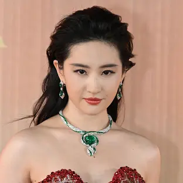

Fa Mulan
A protagonista, filha do soldado Hua Zhou, que se disfarça de homem para entrar no Exército Imperial e proteger o pai.
Atriz:Liu Yifei
A protagonista, filha do soldado Hua Zhou, que se disfarça de homem para entrar no Exército Imperial e proteger o pai.
Atriz:Liu Yifei
O mentor de Mulan, um comandante severo e respeitado do Exército Imperial. É baseado no personagem Li Shang do filme animado.
Ator:Donnie Yen
Uma poderosa feiticeira que pode assumir a forma de outros seres humanos. É uma personagem introduzida na nova adaptação e tem paralelos com Hayabusa do filme animado.
Atriz:Gong Li